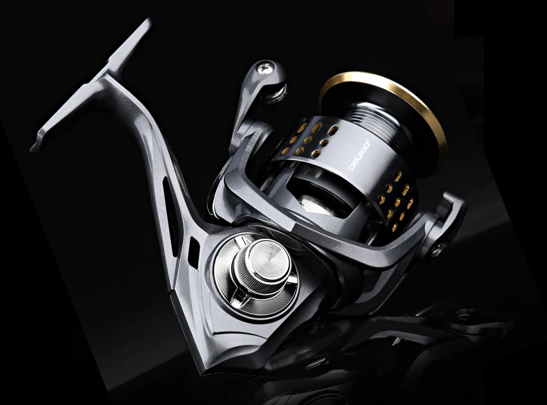
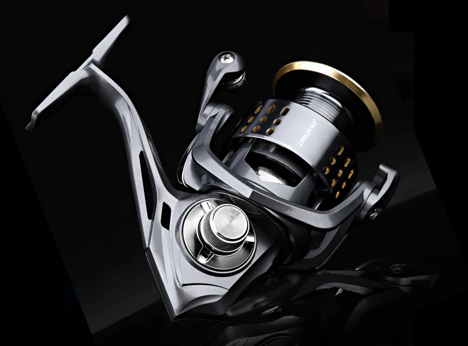

El carrete DEUKIO es un modelo diseñado para pescadores que buscan potencia de freno, robustez y fiabilidad sin necesidad de invertir en gamas altas. Destaca especialmente por su capacidad de arrastre de hasta 15 kg, una cifra muy poco habitual en carretes de este rango de precio.
En acción de pesca, el DEUKIO ofrece una sensación de carrete firme y sólido. La rotación es correcta gracias a sus 3+1 rodamientos, sin holguras apreciables y con un sistema anti-retroceso one-way que elimina golpes al comenzar la recogida.
El freno destaca por ser potente, progresivo y fácil de regular, lo que permite trabajar peces grandes con seguridad, incluso en escenarios exigentes como escolleras, puertos o pesca desde costa en mar abierto.
El DEUKIO es un carrete pensado para quienes priorizan resistencia y potencia por encima de la finura extrema. No pretende competir con modelos premium, pero cumple con creces como carrete fiable, económico y preparado para escenarios exigentes.
Una opción muy interesante como carrete principal económico, segundo equipo o carrete “todoterreno” para salidas sin complicaciones.